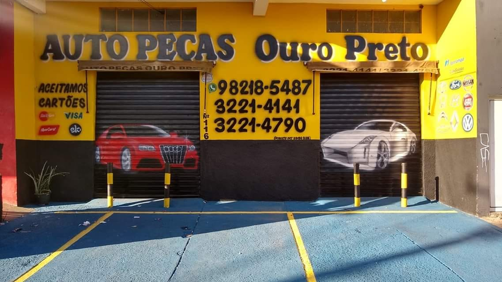

DIFERENCIAL
O principal diferencial da ouro preto que se dedica à venda de peças automotivas tanto da parte elétrica quanto mecânica reside na sua capacidade de oferecer uma solução completa e integrada para as necessidades dos clientes no setor automotivo. Ao fornecer uma ampla gama de peças que abrangem ambos os aspectos do veículo, a ouro preto se posiciona como um balcão único para os consumidores, simplificando o processo de compra e tornando-o mais conveniente.